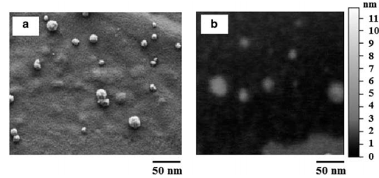

"A dramatic turn has matched me with acute myeloid leukemia. From the sidelines to being sidelined, 40 veins and 40 electrolytes."
"I have acute myeloid leukemia, an aggressive type of cancer. The typical prognosis is 3-6 months to live, but I would like to stress that is for a patient who is not receiving treatment." By Craig Sager
That was some quotes from a patient with acute myeloid leukemia.
leukemia is
a disesse in which human body creates high number of abnormal white blood cells.
Gene therapy is a therapeutic
delivery of a payload attempting modifying specific patient's cells gene

Coinhibition of overexpressed genes in acute myeloid leukemia subtype M2 by gold nanoparticles functionalized with five antisense oligonucleotides and one anti-CD33(+)/CD34(+) aptamer
The purpose of this study was to estimate a modified nanostutcure for silencing important oncogenes utilising a functionalized gold nanoparticles as a vector for that payload.
You can watch a 4min video to figure out the point of the study or keep reading this summary.
Introduction
Acute myeloid leukemia (AML) is a hematologic illness in which hematopoietic stem cells (HSC) are strange (poorly differentiated). Anthracycline and cytarabine are standard chemotherapy for AML however their extreme side effects made a need to build up a targeted therapy. Malignant cells could be targeted by ligands, antibodies or aptamers targeted drug delivery systems. Utilizing small oligonucleotides to decline or silence specific genes (i.e. called antisense treatment) could be useful in treating AML. In this investigation; Gold nanoparticles utilized as vector for conveying antisense oligonucleotides(AOs) which target five imperative oncogenes e.g. BAG1, MDM2, BCL-2, BIRC5 and XIAP and against CD33(4)/CD34(5) as an aptamer for focusing on (HSC).
Methodology
The arrangement of mRNA of every gene was gotten from NCBI database and by help of oligo-work software; best AOs are picked. After that a poly A sequence was added between each AO sequence to create poly A-SH. Synthesis of gold nanoparticles was finished by the assistance of ascorbic acid after that it blended with poly A-SH to create poly A modified gold nanoparticles and aptamer was included as the last advance. Preparation of cells suspension; AML patient's blood test were centrifuged and after that the middle layer was taken (the cancerous cells). That layer was been tested against three grouping of functionalized gold nanoparticles (FGNs), naked gold nanoparticles, gold nanoparticles functionalized with a scrambled oligonucleotide (GNFSONs) and doxorubicin. Cells viability was been estimated by MTT assay [(3-(4,5-dimethylthiazol-2-yl)- 2,5-diphenyltetrazolium bromide ) assay]. RNA strands was isolated by utilizing RNX- Plus buffer and NanoDrop products which used in measuring optical density of isolated RNA. By mixing total RNA with random hexamer, a cDNA was produced. That cDNA was entered into a real-time PCR machine and the threshold cycle (CT) of each gene was gotten and each gene expression ratio was calculated.

Figure 1. The scanning electron microscopy (SEM) (a) and atomic force microscopy (AFM) (b) image of functionalized gold nanoparticle(FGNs).
Results
Cells death is directly proportional to concentration of FGNs . i.e. the higher the concentration, the lower cells viability. At a similar concentration, FGNs has higher cells death than naked gold nanoparticles and GNFSON. The contrast amongst FGNs and doxorubicin that FGNs had a more grounded impact than doxorubicin on gene expression. NGNs and GNFSONs were able to silence genes only at higher concentration was utilized.
Figure 2. The cell death percentage of acute myeloid leukemia subtype 2 (AML-M2) cells when exposed to functionalized gold nanoparticles (FGNs), naked gold nanoparticles (NGNs), gold nanoparticles functionalized with scrambled oligonucleotides (GNFSONs), doxorubicin and phosphate-buffered saline (PBS). G1 to G13 were described in Materials and methods section.
Conclusion
FGNs with a five antisense oligonucleotides as a payload affected acute myeloid leukemia and caused cell death.